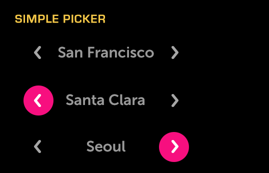

Simple Picker
About
A Simple Picker is a basic, horizontally-oriented picker that allows the user to select one item from a list.
API Reference
Behavior and States
Behavior
The Simple Picker displays a horizontal list of options that a user may pick from. Only the currently selected option is visible; all other options are hidden from the user. Left and right arrows are used to navigate the list one option at a time.
By default, the list of options does not wrap. When the end is reached, the right arrow is deactivated and the user must navigate back (left) to reach the beginning. (In the same way, the left arrow is disabled when the user reaches the beginning of the list while navigating backward.) Alternatively, you may enable wrapping to have the list loop continuously.
You may also set the picker to animate the transition between values; if you do so, the options will appear to slide from one value to another.
Because only one item is visible at a time, the Simple Picker is best suited for use in situations where the options are limited and easily understood. For example, it is appropriate to use this control to make a selection from a list of time zones, or from a short list of languages; it is not appropriate to use Simple Picker with long, data-driven lists.
When a user reaches the last item in the picker, the focus shifts to the opposite arrow button.
States
The Simple Picker has two states: normal and deactivated. In the normal state, users may interact with the picker; in the deactivated state, the control cannot be used.
The Simple Picker’s arrows also have states (when the picker is not deactivated):
Normal (up/unpressed)
The arrows are available for use and are not selected.
Focused (hover)
An arrow currently has focus from the remote and is ready to be selected. Only one arrow may be focused at a time.
Deactivated (disabled)
The arrow cannot be selected because the end of the list has been reached (and wrapping is not enabled).
Sizing
The Simple Picker’s width will be the width of the longest item it contains.
If an option is truncated, the text will marquee (scroll horizontally) when either arrow is focused.
